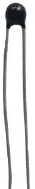

ESP32-S3 board
The brain that runs your uploaded sketch.
TinySkiff ESP32-S3 Lab · Day 18 of 30
Today you build a thermometer. A thermistor changes its resistance as the air around it warms or cools, and the ESP32-S3 reads that change and prints the temperature once a second. Its resistance follows a curve rather than a straight rule, so the sketch carries a short formula to read it honestly. Pinch the little bead and watch the number climb — the same sensing that tells a skipper the engine room is running warm.
TSK-DAY18-THERMOMETER
Hand this to an agent so it can pull the lesson packet and coach you step by step.
01 First, know the pieces
Six things, nothing more. Tap Define on any part you haven't met — the answer opens as a field note you can read and dismiss without losing your place.
The brain that runs your uploaded sketch.

Spreads the pins into rows you can reach and label.

A small bead whose resistance falls as it warms — today's sensor.

The steady half of the divider that turns resistance into voltage.

Temporary, solder-free connections.

Uploads code and opens Serial Monitor.
02 Make the physical circuit
The official Freenove diagram is your chart — schematic on top, the same circuit built on a breadboard below. Click it to enlarge. Two parts in a line make the divider; one wire taps its midpoint.
Check before power. The thermistor has no polarity — either leg can face either way — but the midpoint wire must land on GPIO 1. Unplug USB before you move any wire.
03 One action at a time
This is the main path — you can finish the day without opening a single field note. Tap each step as you go to keep your place.
Seat the ESP32-S3 on the GPIO extension board and keep USB unplugged while you wire.
Push the thermistor into the breadboard with its two legs in separate rows.
Place the 10 kΩ resistor so one leg shares a row with one thermistor leg — that shared row is the divider's midpoint.
Run a jumper from 3.3V to the resistor's free leg.
Run a jumper from the midpoint row to GPIO 1.
Run a jumper from the thermistor's free leg to GND.
Compare every wire to the chart, then plug in USB.
Open Sketch_12.1_Thermometer.ino in Arduino IDE and upload it.
Open Serial Monitor and set the baud rate to 115200.
Pinch the thermistor's bead between two fingers and watch the temperature climb.
04 Read just enough code
The whole loop is four working lines — a chain that walks from a raw ADC count to volts, to ohms, to degrees. Switch to MicroPython if you'd rather see the same chain in Python; the wiring never changes.
#define PIN_ANALOG_IN 1
void setup() {
Serial.begin(115200);
}
void loop() {
int adcValue = analogRead(PIN_ANALOG_IN); //read ADC pin
double voltage = (float)adcValue / 4095.0 * 3.3; // calculate voltage
double Rt = 10 * voltage / (3.3 - voltage); //calculate resistance value of thermistor
double tempK = 1 / (1 / (273.15 + 25) + log(Rt / 10) / 3950.0); //calculate temperature (Kelvin)
double tempC = tempK - 273.15; //calculate temperature (Celsius)
Serial.printf("ADC value : %d,\tVoltage : %.2fV, \tTemperature : %.2fC\n", adcValue, voltage, tempC);
delay(1000);
}analogRead(PIN_ANALOG_IN)Reads the divider midpoint on GPIO 1 as a number from 0 to 4095. double Rt = 10 * voltage / (3.3 - voltage)Works the divider maths backwards to recover the thermistor's resistance in kilo-ohms. log(Rt / 10) / 3950.0The B-equation — B is 3950 for this bead — maps that resistance onto temperature in Kelvin; subtracting 273.15 lands it in Celsius. Optional side path · same circuit
adc=ADC(Pin(1))
adc.atten(ADC.ATTN_11DB)
adc.width(ADC.WIDTH_12BIT)
adcValue=adc.read()
voltage=adcValue/4095*3.3
Rt=10*voltage/(3.3-voltage)
tempK=(1/(1/(273.15+25)+(math.log(Rt/10))/3950))
tempC=tempK-273.15adc.atten(ADC.ATTN_11DB)Opens the pin to the full 0–3.3 V range so the divider's whole swing is readable.Rt=10*voltage/(3.3-voltage)The same divider arithmetic as the Arduino sketch — volts back into kilo-ohms.Same pin, same maths, same printout. Run it in Thonny and compare the temperature with the Arduino version. If MicroPython isn't set up yet, skip this — it should never block the Arduino-first day.
05 Understand, don't memorise
Every analog sensor so far handed the ADC a signal you could rescale with a straight line: map() stretched one range onto another and the job was done. The thermistor asks for more. Its resistance follows a curve against temperature, where the potentiometer and photoresistor tracked something close to a straight line — so a plain rescale would land the right degrees at one point and drift away on either side. The sketch walks one reading through four steps instead, and the last step uses a logarithm to follow that curve.
analogRead samples the divider midpoint on GPIO 1 and returns a count from 0 to 4095. That single number is the whole input.
Dividing the count by 4095 and scaling by 3.3 recovers the real voltage sitting at the midpoint, in volts.
Running the divider maths backwards, Rt = 10 * V / (3.3 - V) recovers the thermistor's own resistance in kilo-ohms from that voltage.
The B-equation feeds that resistance through a logarithm to reach Kelvin, then subtracting 273.15 lands it in Celsius. This curved step is the one the logarithm exists to handle.
ADC count → volts → ohms → degrees — and the last arrow follows a curve, so it takes a logarithm
map() draws a straight line between two points, ideal when a sensor rises evenly across its range. A thermistor's resistance follows a curve as it heats, so a straight rescale would match the real temperature at a single point and wander off on either side. The B-equation carries a logarithm that follows the curve, keeping the reading honest from cold to warm.
A thermistor is made of a material whose electrons flow more freely as it warms, so its resistance drops as temperature rises. At 25 °C this bead sits near 10 kΩ, which is why the sketch's reference values are built around 10 and 25.
The ADC measures voltage, and the thermistor only offers a changing resistance. Stacking the fixed 10 kΩ resistor above it makes a divider whose midpoint voltage tracks that resistance — the one form the pin can actually read.
06 Know it worked
Success and recovery sit side by side, so you never have to go hunting when something looks off.
A steady room line first — somewhere around 20 to 26 °C. Pinch the bead and the temperature climbs a few degrees; let go and it eases back down.
07 Make the idea yours
The printout already shows all three links at once — the raw ADC count, the voltage, and the temperature. Warming the bead lets you watch them move together and trace why. It fits inside today's 25 minutes.
Let the reading settle at room temperature, then pinch the bead between two fingers. Watch the ADC value and the voltage drop while the temperature rises, and let go to see them ease back. Every printed line carries all three at once.
A warmer bead means lower resistance, which pulls the divider midpoint down — fewer volts, fewer ADC counts. The formula reads that lower resistance as a higher temperature, so the count falling and the degrees rising are one event seen at two ends of the chain.
08 Learn it with a hand on the tiller
Every lesson ships with a code and a machine-readable packet, so an agent can guide you with full context.
TSK-DAY18-THERMOMETER
How the agent should behave: guide one physical connection at a time, wait for you to confirm, and use the printed ADC, voltage, and temperature fields to teach the count-to-resistance-to-degrees chain — including why a thermistor's curve takes a formula where earlier sensors used map(). Always check wiring, board, port, and USB before changing code.